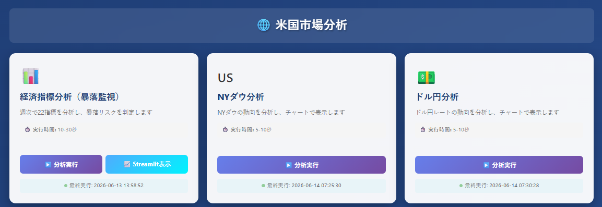
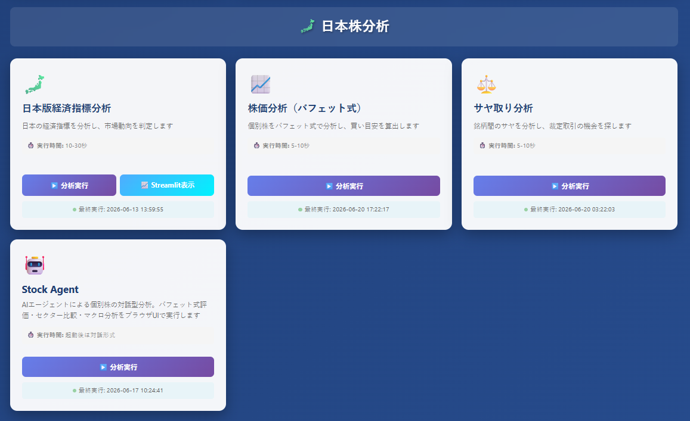
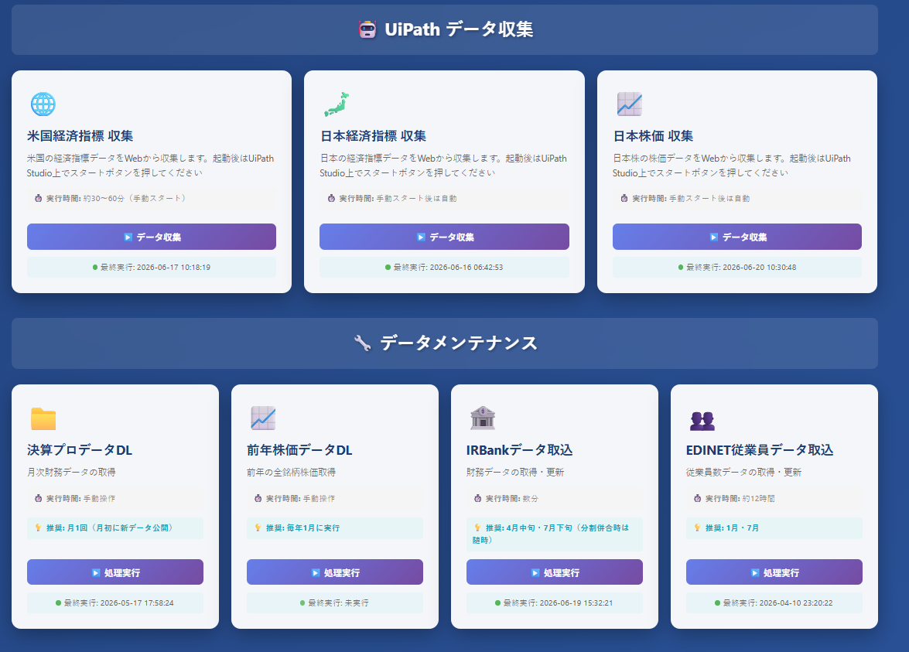

画面紹介
投資分析ポータルのUI





個人開発の投資分析システム群を一つに統合したWebポータル。米国市場・日本株式の分析から、UiPathによるデータ自動収集、AIエージェントによるデータメンテナンスまでをワンストップで提供します。
投資分析ポータル — Investment Analysis Portal
米国市場分析・日本株分析・データ収集・データメンテナンスの4セクション、計14個のツールを一つのWebアプリ上で管理。FastAPIをバックエンドに、HTML/CSS/JavaScriptでフロントエンドを構築しています。
データメンテナンスQ&Aアシスタントを内蔵し、Claude APIを活用したAIエージェントがデータ取込や運用に関する質問に対応します。
UiPathと連携し、米国・日本の経済指標や日本株価データを自動収集。手作業を排した安定的なデータパイプラインを実現しています。
主要な経済指標分析機能はStreamlitダッシュボードとして切り出し、誰でもアクセスできる形で公開しています。
投資分析ポータルのUI



4セクション / 14ツール
Streamlitダッシュボード（実際に公開中）